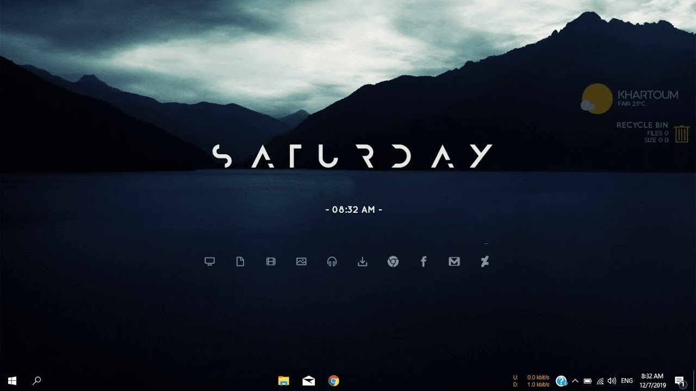

Rainmeter: Кастомизация рабочего стола
Rainmeter — это мощная платформа для настройки рабочего стола Windows. Вы можете создавать свои виджеты, часы, погодные информеры, панель запуска программ и многое другое.
Основные функции:
- Создание уникального дизайна рабочего стола.
- Множество готовых тем и виджетов.
- Минимальная нагрузка на систему.
- Поддержка анимаций и интерактивности.
Примеры использования:
Rainmeter позволяет персонализировать ваш рабочий стол так, как вы всегда мечтали. Добавьте:
- Часы и календарь с уникальным дизайном.
- Информеры о системе (загрузка ЦП, температура, сеть).
- Панель быстрого доступа к приложениям.
Как начать?
- Скачайте Rainmeter с официального сайта.
- Установите программу и выберите тему.
- Настройте виджеты и их размещение.